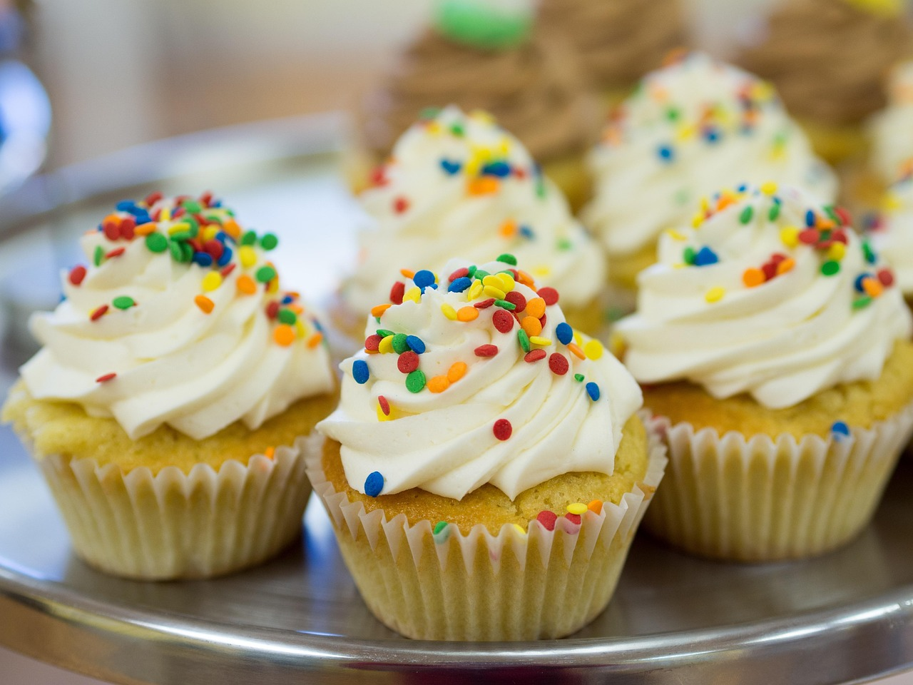

Cupcake Grundrezept

Diese Cupcakes überzeugen mit luftigem Teig und leckerer Buttercreme. Unsere Schritt-für-Schritt-Anleitung zeigt, wie du diese hübschen Vanille-Cupcakes ganz einfach selbst machen kannst.

45 min

einfach

30.11.2025
Für den Teig
- 120 g weiche Butter
- 120 g Zucker
- 1 Vanilleschote
- 2 Eier (Gr. M)
- 150 Weizenmehl (Type 405)
- 2 Backpulver
- 5 Buttermilch
Für die Buttercreme
- 150 g weiche Butter
- 200 g Puderzucker
- 1 TL Vanilleextrakt
- 2 EL Milch
- Zuckerperlen zum Dekorieren
.
Zubereitung
Vorbereitung 25 min
Backen 18 min
1. SCHRITT
Die Mulden eines Muffinblechs (12 Mulden) mit Papierförmchen auslegen. Backofen auf 180 Grad Ober-/ Unterhitze (Umluft: 160 Grad) vorheizen. Für den Teig Butter, Zucker und Mark einer Vanilleschote schaumig schlagen. Eier einzeln hinzugeben und mindestens 30 Sekunden unterschlagen.
2. SCHRITT
Mehl mit Backpulver vermischen, mit der Buttermilch zum Teig geben und verrühren. Teig mit einem Eisportionierer auf die Papierförmchen verteilen. Cupcakes im vorgeheizten Ofen ca. 18 Minuten backen. Vorsichtig aus dem Blech holen und vollständig auf einem Kuchengitter abkühlen lassen.
3. SCHRITT
Für die Buttercreme die Butter hell aufschlagen. Puderzucker gesiebt nach und nach dazugeben, Vanilleextrakt und Milch dazugeben und weiterschlagen. Buttercreme in einen Spritzbeutel mit Sterntülle füllen und auf die abgekühlten Cupcakes spritzen. Nach Belieben mit Zuckerperlen dekorieren und servieren.
Rezept Erstellt von
 Christina
Christina